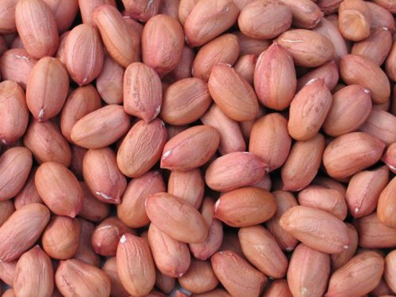
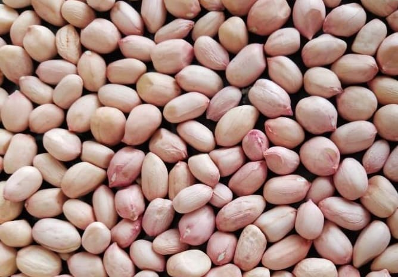
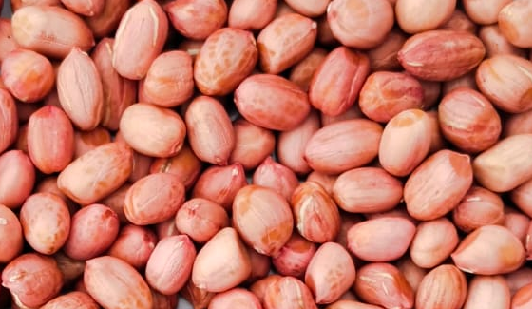
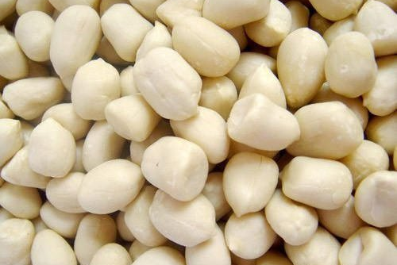
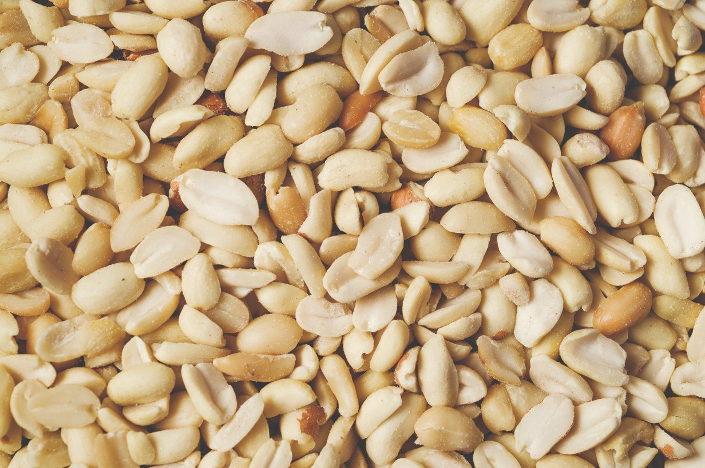

Indian Peanuts
We work with Gujarat's most reputable, GMP and HACCP-certified peanut processors — sourced directly from the world's finest groundnut-growing belt. All Indian varieties are carefully graded, quality-tested, and exported to meet the most stringent global standards.

Bold Peanuts (Runner)
India's most widely exported peanut variety. Large, plump kernels with uniform size, rich flavour, and excellent roasting characteristics. Preferred by snack manufacturers, roasters, and confectioners globally. Available raw, roasted, and blanched on request.
| Count / Size (per Oz) | 38/42, 40/50, 50/60, 60/70 |
|---|---|
| Moisture | 7% Max |
| Oil Content | 48–52% |
| Admixture / Foreign Matter | 1% Max |
| Shriveled / Damaged Kernels | 2% Max |
| Aflatoxin | < 4 PPB (EU Compliant) / < 10 PPB (General) |
| Salmonella | Absent in 25g |
| Packaging | 25 kg / 50 kg New Jute or PP bags | 25 kg Vacuum bags (max 25 kg) |
| Container Load (20 FCL) | Approx. 24–25 MT |

Java Peanuts (Small Runner)
Medium-sized, round kernels with a delicate, mild flavour profile. Java peanuts are widely used in peanut butter production, confectionery coatings, and food processing across Asia, Europe, and the Middle East. Consistently high oil content and excellent shelf life.
| Count / Size (per Oz) | 50/60, 60/70, 70/80, 80/90 |
|---|---|
| Moisture | 7% Max |
| Oil Content | 46–50% |
| Admixture / Foreign Matter | 0.5% Max |
| Shriveled / Damaged Kernels | 2% Max |
| Aflatoxin | < 4 PPB |
| Salmonella | Absent in 25g |
| Packaging | 25 kg / 50 kg PP bags | 25 kg Vacuum bags (max 25 kg) |
| Container Load (20 FCL) | Approx. 24–25 MT |

TJ Peanuts (Tiger Jumbo / Striped)
Exceptionally large-seeded, naturally striped variety with a distinctive appearance and rich, sweet flavour. TJ peanuts command a premium in South-East Asian markets — particularly China and Vietnam — where they are used for roasting, boiling, and direct consumption.
| Count / Size (per Oz) | 20/30, 30/40, 35/45 |
|---|---|
| Moisture | 7% Max |
| Oil Content | 46–48% |
| Admixture / Foreign Matter | 1% Max |
| Aflatoxin | < 10 PPB |
| Salmonella | Absent in 25g |
| Packaging | 25 kg / 50 kg New Jute bags |
| Container Load (20 FCL) | Approx. 23–24 MT |

Blanched Peanuts (Whole)
Bold or Java peanuts with the skin completely removed through a precision hot-water blanching process, producing clean, bright, uniform white kernels. Ideal for confectionery coating, chocolate production, peanut butter, roasting, and premium snack applications globally.
| Count / Size (per Oz) | 38/42, 40/50, 50/60, 60/70, 70/80 |
|---|---|
| Moisture | 4% Max |
| Oil Content | 48–52% |
| Splits | 4% Max |
| Colour | Uniform White — No discolouration |
| Skin-On / Off Colour | 0.5% Max |
| Aflatoxin | < 4 PPB (EU) / < 10 PPB (General) |
| Salmonella | Absent in 25g |
| Packaging | 25 kg Vacuum bags in cartons (Max 25 kg per bag) |
| Container Load (20 FCL) | Approx. 14–15 MT |

Split Blanched Peanuts
Blanched peanuts precisely split into two equal halves. Split blanched peanuts are widely used as toppings for confections, baked goods, ice creams, chocolates, and breakfast cereals, and as ingredients in cooking, salads, and energy bars.
| Moisture | 4% Max |
|---|---|
| Oil Content | 48–52% |
| Whole Kernels in Splits | 5% Max |
| Colour | Uniform White |
| Skin-On / Off Colour | 0.5% Max |
| Broken / Powder | 2% Max |
| Aflatoxin | < 4 PPB |
| Salmonella | Absent in 25g |
| Packaging | 25 kg Vacuum bags in cartons (Max 25 kg per bag) |
| Container Load (20 FCL) | Approx. 13–14 MT |

In-Shell Peanuts (Groundnuts in Pod)
Premium quality peanuts in their natural shell — well-filled, uniform size, and attractive colour. Primarily exported to China, Vietnam, Indonesia, and Southeast Asian markets for roasting, boiling, and direct consumption. Also popular in Middle Eastern and European markets.
| Count / Size (per Oz) | 160/180, 180/200, 200/220, 220/240 |
|---|---|
| Moisture | 8% Max |
| Oil Content (kernel) | 46–50% |
| Admixture / Soil | 1% Max |
| Broken / Damaged Pods | 3% Max |
| Unfilled / Shriveled Pods | 5% Max |
| Aflatoxin | < 10 PPB |
| Packaging | 25 kg / 50 kg New Jute or PP woven bags |
| Container Load (20 FCL) | Approx. 20–22 MT |